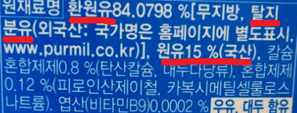
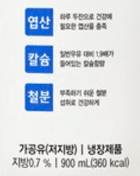
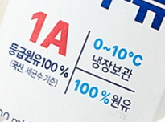
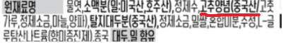
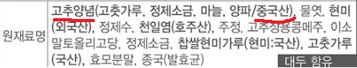
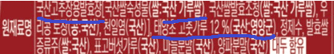
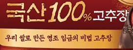
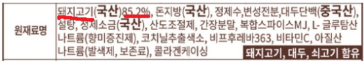

1. 우유


환원유 = 유사 우유
우유 전면에 원유라는 말이 없음

진짜 우유 = 당당하게 전면에도 100% 원유라고 박아넣어놈
가격 차이는 그리 크진 않지만 가짜 우유가 저렴
뭐 모르겟으면 걍 외궈산 멸균우유 ㄱㄱ
2. 고추장


가짜 고추장 = 고추양념(중국산)


진짜 고추장은 대놓고 100% 국산임을 강조
가격차이 약 3배
3. 돼지고기 가공육
저렴한 가공육 = 돼지고기인데 저렴한 닭잡육 섞어 넣음

제대로된 가공육 = 높은 돈육함량
가격차이 약 2배
이외에도 중국산 김치 vs 국사 김치 등
걍 싸다싶으면 죄다 중궈 개입됨
휴장이라 심심해서 써봄
댓글
수집 당시 댓글 209개
ㅇㅇ · 11.27 21:55:29
· ㅇㅇ · 11.27 21:58:26
· ㅇㅇ · 11.27 21:58:30
· ㅇㅇ · 11.27 22:02:36
· ㅇㅇ · 11.28 01:00:10
ㅇㅇ · 11.27 21:56:37
ㅇㅇ · 11.27 21:57:38
· _.___,.__ · 11.28 16:13:55
ㅇㅇ · 11.27 21:58:13
ㅇㅇ · 11.27 21:58:28
· ㅇㅇ · 11.27 22:01:41
· ㅇㅇ · 11.28 00:04:58
· ㅇㅇ · 11.28 00:26:58
· ㅇㅇ · 11.28 16:09:08
ㅇㅇ · 11.27 21:58:38
· ㅇㅇ · 11.28 05:44:36
ㅇㅇ · 11.27 21:59:42
ㅇㅇ · 11.27 21:59:44
ㅇㅇ · 11.27 22:01:50
엔갤러 · 11.27 22:02:24
ㅇㅇ 원산지 보면 후진국이거나 중국산
ㅇㅇ · 11.27 22:02:36
· ㅇㅇ · 11.28 16:11:29
ㅇㅇ · 11.27 22:07:54
· 28. · 11.27 22:09:46
· ㅇㅇ · 11.27 22:11:45
· ㅇㅇ · 11.27 22:12:28
· ㅇㅇ · 11.27 23:18:13
· ㅇㅇ · 11.28 14:27:29
28. · 11.27 22:09:25
28. · 11.27 22:10:16
ㅇㅇ · 11.27 22:10:17
클갤러1 · 11.27 22:10:52
소봄쇼 · 11.27 22:15:01
ㅇㅇ · 11.27 22:17:27
ㅇㅇ · 11.27 22:18:47
· ㅇㅇㅇ · 11.27 23:54:51
· ㅇㅇ · 11.28 03:52:57
ㅇㅇ · 11.27 22:19:00
ㅇㅇ · 11.27 22:19:57
· ㅇㅇ · 11.28 02:25:11
ㅇㅇ · 11.27 22:28:24
ㅇㅇ · 11.27 22:28:32
. · 11.27 22:34:03
ㅇㅇ · 11.27 22:52:27
piyo · 11.27 22:53:21
ㅇㅇ · 11.27 23:01:37
ㅇㅇ · 11.27 23:07:03
· ㅇㅇ · 11.27 23:07:26
히이잉 · 11.27 23:07:24
ㅇㅇ · 11.27 23:07:38
· ㅇㅇ · 11.27 23:20:32
· ㅇㅇ · 11.27 23:38:04
ㅇㅇ · 11.27 23:11:59
ㅇㅇ · 11.27 23:16:13
ㅇㅇ · 11.27 23:46:23
ㅇㅇ · 11.27 23:46:35
ㅇㅇ · 11.27 23:49:49
관타나모 · 11.27 23:52:10
pyuru · 11.28 00:02:06
ㅇㅇ · 11.28 00:13:15
ㅇㅇ · 11.28 00:14:34
ㅇㅇ · 11.28 00:14:36
(⌒,_>⌒) · 11.28 00:15:30
ㅇㅇ · 11.28 00:26:10
ㅇㅇ · 11.28 01:04:50
ㅇㅇ · 11.28 01:13:11
ㅇㅇ · 11.28 01:20:03
ㅇㅇ · 11.28 02:24:09
ㅇㅇ · 11.28 02:40:01
ㅇㅇ · 11.28 04:01:36
ㅇㅇ · 11.28 04:27:27
ㅇㅇ · 11.28 04:27:31
ㅇㅇ · 11.28 04:27:37
페인 · 11.28 04:52:34
ㅇㅇ · 11.28 05:10:12
ㅇㅇ · 11.28 05:53:05
ㅇㅇ · 11.28 06:27:34
ㅇㅇ · 11.28 06:29:37
ㅇㅇ · 11.28 06:31:49
ㅇㅇ · 11.28 06:40:35
ㅇㅇ · 11.28 06:44:14
ㅇㅇ · 11.28 07:04:20
thelagacy · 11.28 07:57:29
· ㅇㅇ · 11.28 14:28:39
ㅇㅇ · 11.28 08:49:59
ㅇㅇ · 11.28 08:57:18
타이밍뒷통수한방 · 11.28 09:47:30
주소킹 · 11.28 09:53:49
· 주소킹 · 11.28 09:53:55
ㅇㅇ · 11.28 10:01:04
ㅇㅇ · 11.28 11:10:47
홀홀 · 11.28 13:37:22
삭제됨 · 11.28 13:51:32
· ㅇㅇ · 11.28 15:54:27
ㅇㅇ · 11.28 14:09:43
ㅇㅇ · 11.28 15:39:47
ㅇㅇ · 11.28 16:11:51
ㅇㅇ · 11.28 16:34:07
ㅇㅇ · 11.28 19:08:49
ㅇㅇ · 11.28 19:15:51
· ㅇㅇ · 11.27 21:33:36
· ㅇㅇ · 11.27 21:35:57
· ㅇㅇ · 11.27 21:39:49
· ㅇㅇ · 11.27 21:41:21
· ㅇㅇ · 11.27 21:43:01
· ㅇㅇ · 11.27 21:58:57
· ㅇㅇ · 11.27 22:04:17
· ㅇㅇ · 11.27 22:07:38
· ㅇㅇ · 11.27 22:08:54
Walkers · 11.27 04:40:15
· 하늘색소라 · 11.27 04:40:47
이거는 · 11.27 04:40:29
· 하늘색소라 · 11.27 04:41:06
· ㅇㅇ · 11.28 01:05:24
삭제됨 · 11.27 04:41:15
· 하늘색소라 · 11.27 04:41:35
이거는 · 11.27 04:42:08
· 하늘색소라 · 11.27 04:43:46
· 이거는 · 11.27 04:44:25
· ㅇㅇ · 11.27 22:05:00
· 28. · 11.27 22:12:38
모스콥스 · 11.27 04:42:49
· 하늘색소라 · 11.27 04:43:57
이거는 · 11.27 04:45:26
· 하늘색소라 · 11.27 04:45:56
· 이거는 · 11.27 04:46:32
봇치쟝 · 11.27 21:30:37
· ㅇㅇ · 11.27 21:39:59
· 냥이맨 · 11.27 21:46:18
· 봇치쟝 · 11.27 21:47:35
· ㅇㅇ · 11.27 21:57:28
말
존나
많네
· ㅇㅇ · 11.27 23:48:59
ㅇㅇ · 11.27 21:31:32
폴신짱짱맨 · 11.27 21:31:40
ㅇㅇㅇ · 11.27 21:32:16
ㅇㅇ · 11.27 21:32:55
ㅇㅇ · 11.27 21:33:08
ㅇㅇ · 11.27 21:33:09
ㅇㅇ · 11.27 21:33:45
· ㅇㅇ · 11.27 21:34:25
· ㅇㅇ · 11.27 21:34:30
· ㅇㅇ · 11.27 21:35:53
· 28. · 11.27 22:12:02
ㅇㅇ · 11.27 21:33:56
· ㅇㅇㅇ · 11.27 23:53:32
ㅇㅇ · 11.27 21:34:01
andrey_santos · 11.27 21:35:03
히이잉 · 11.27 21:35:19
ㅇㅇ · 11.27 21:35:26
ㅇㅇ · 11.27 21:35:40
ㅇㅇ · 11.27 21:35:48
ㅇㅇ · 11.27 21:35:49
· ㅇㅇ · 11.27 21:37:28
ㅇㅇ · 11.27 21:36:01
삭제됨 · 11.27 21:37:32
· ㅇㅇ · 11.27 22:22:33
ㅇㅇ · 11.27 21:38:20
llllllIllllll · 11.27 21:38:22
· ㅇㅇ · 11.27 21:40:25
· 28. · 11.27 22:11:43
· ㅇㅇ · 11.27 23:10:24
ㅇㅇ · 11.27 21:39:06
ㅇㅇ · 11.27 21:39:43
ㅇㅇ · 11.27 21:39:45
ㅇㅇ · 11.27 21:40:19
· ㅇㅇ · 11.27 21:40:56
· ㅇㅇ · 11.27 21:53:24
· ㅇㅇ · 11.27 21:57:28
퍄퍄. · 11.27 21:40:30
ㅇㅇ · 11.27 21:40:48
ㅇㅇ · 11.27 21:42:55
· ㅇㅇ · 11.27 22:04:52
· 28. · 11.27 22:11:13
ㅇㅇ · 11.27 21:43:20
ㅇㅇ · 11.27 21:43:35
ㅇㅇ · 11.27 21:44:48
· ㅇㅇ · 11.27 22:33:57
· ㅇㅇ · 11.27 22:34:31
ㅇㅇ · 11.27 21:44:55
· ㅇㅇ · 11.27 21:45:05
· ㅇㅇ · 11.27 21:59:37
ㅇㅇ · 11.27 21:45:04
· 너도?나도 · 11.28 08:32:10
ㅇㅇ · 11.27 21:45:31
· ㅇㅇ · 11.28 07:52:22
· ㅇㅇ · 11.28 07:52:42
ㅇ · 11.27 21:46:37
ㅇㅇ · 11.27 21:47:10
· ㅇㅇ · 11.27 21:51:37
ㅇㅇ · 11.27 21:51:01
ㅇㅇ · 11.27 21:51:08
후지가
야스이
ㅇㅇ · 11.27 21:51:42
· ㅇㅇ · 11.27 21:51:50
중국이하
조선빵즈
· ㅇㅇ · 11.27 21:56:59
대국의
은혜
· ㅇㅇ · 11.28 02:50:57
짱~깨
ㅇㅇ · 11.27 21:52:50
ㅇㅇ · 11.27 21:53:16
· ㅇㅇ · 11.27 21:56:09
· ㅇㅇ · 11.27 21:59:34
ㅇㅇ · 11.27 21:55:24
어쩌라고
ㅇㅇ · 11.27 04:38:03
· 하늘색소라 · 11.27 04:38:51
이거는 · 11.27 04:39:32
· 하늘색소라 · 11.27 04:40:34
· 이거는 · 11.27 04:41:10
· ㅇㅇ · 11.27 04:48:37
· 이거는 · 11.27 04:49:10
· ㅇㅇ · 11.27 04:49:23
· ㅇㅇ · 11.27 21:32:46